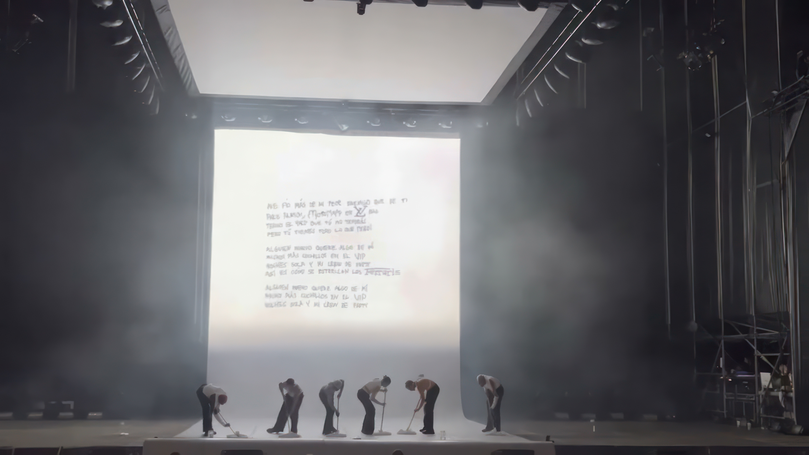

*
My name is Marta, and I'm a Postproduction Artist at
CANADA
, a production company based in
Barcelona; Specializing in digital and analog workflows. Focused on motion graphics, animation,
clean plates, rotoscoping, beauty VFX, 2D compositing, chroma keying, Artificial Intelligence imagery, sky/screen integration, set extension, wire removal,
offline/online editing, and social media adaptations. Skilled in Adobe Premiere and postproduction pipelines.

SAINt JHN - Glitching (Music Video)
2 mins 46 seconds, 3840x1608
Directed by Alex Gargot
ROSALÍA - MOTOMAMI (TikTok LIVE Performance)
28 mins 47 seconds, 1080x1920
Directed by STILLZ
ROSALÍA - MOTOMAMI World Tour (Interlude Visuals Animation)
1200x1466
Designed by @viktorhstudios
Tocar para reproducir

SQUID - Cro-Magnon Man (Music Video)
4 mins 28 seconds, 3840x2160
Directed by Rory Alexander Stewart
EA Sports - FC26 (Commercial)
52 seconds, 2202x2202
Directed by Billy King
Tocar para reproducir
Tocar para reproducir
Tocar para reproducir
TINI - posta (Music Video)
2 mins 37 seconds, 1920x1080
Directed by Bàrbara Farré
Sasha Keable - FEEL SOMETHING (Music Video)
3 mins 15 seconds, 3840x2160
Directed by Billy King
ROSALÍA, Rauw Alejandro - VAMPIROS (Music Video)
3 mins 33 seconds, 1440x1080
Directed by STILLZ
Romeo Santos, ROSALÍA - El Pañuelo (Music Video)
4 mins 25 seconds, 1440x1080
Directed by Roger Guàrdia
Mora - DE INMEDIATO (Music Video)
3 mins 19 seconds, 1440x1080
Directed by STILLZ
Rauw Alejandro & Chencho Corleone - Desesperados (Music Video)
3 mins 51 seconds, 1920x1080
Directed by MANSON
Arca & Tokischa - Chama (Music Video)
4 mins 10 seconds, 1440x1080
Directed by STILLZ
DOESN'T IT FEEL LIKE THIS WAS THE BEGINNING? (Music Video)
5 mins 31 seconds, 1440x1080
Directed by STILLZ
Tutto Passa - A Tribute to Napoli by Coldplay (Music Video)
11 mins 13 seconds, 1440x1080
Directed by STILLZ
FOALS - 2001 (Music Video)
4 mins 27 seconds, 1500x1080
Directed by ESTEBAN
Bad Gyal - Sin Carné (Music Video)
2 mins 07 seconds, 1920x1080
Directed by MANSON
Arlo Parks - Weightless (Music Video)
3 mins 39 seconds, 2806x2160
Directed by Marc Oller
Residente - René (Visualizer)
7 mins 38 seconds, 1920x1080
Creative direction by TERRIVLE STUDIO, AI generations by Álvaro Posadas & Marta Ferrero @CANADA
Volkswagen - Coplas (Commercial)
40 seconds, 1920x1080
Directed by Pau Carreté
Barça x Spotify x Travis Scott (Commercial)
50 seconds, 1920x1080
Directed by Pau Carreté
Havana Club - Refreshingly Cuban (Commercial)
20 seconds, 2880x1620
Directed by Ryan Doubiago
Zara Origins - The Arrival Of Spring (Commercial)
2 minutes 05 seconds, 2796x1172
Directed by BYNT
Tocar para reproducir
Polaroid - For the Imperfectionists: Coco Capitán (Commercial)
1 minute, 2186x1372
Directed by Luo Jian
Aena - Un día sin aeropuertos 2024: Andaré, por David Bisbal (Commercial)
1 minute 50 seconds, 2160x1620
Directed by Alex Gargot
Repsol - Switches (Commercial)
57 seconds, 1440x1080
Directed by ESTEBAN
El Príncep (Shortfilm)
29 mins, DCI 2048x1080
Directed by Alex Sardà
In Bocca Al Lupo (Documentary)
25 mins, 1920x1080
Directed by Adriana Roslin